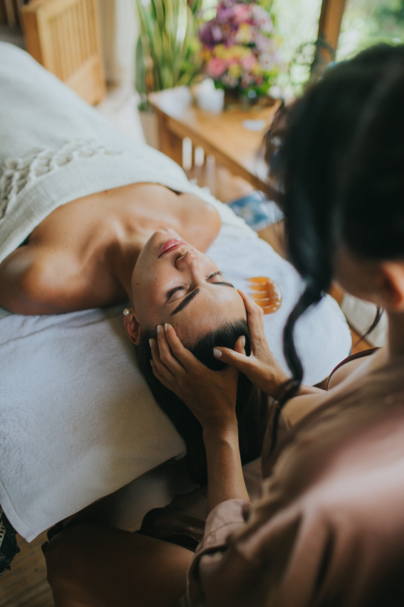
010122
01 / 22

01остров
полный круг · Бали · Ява · Нуса-Пенида
БАЛИ
остров, каким его
почти никто не видит
29 октября — 11 ноября · 2026
02четыре опоры
зачем ехать
Не просто отдых.
Две недели другого ритма.
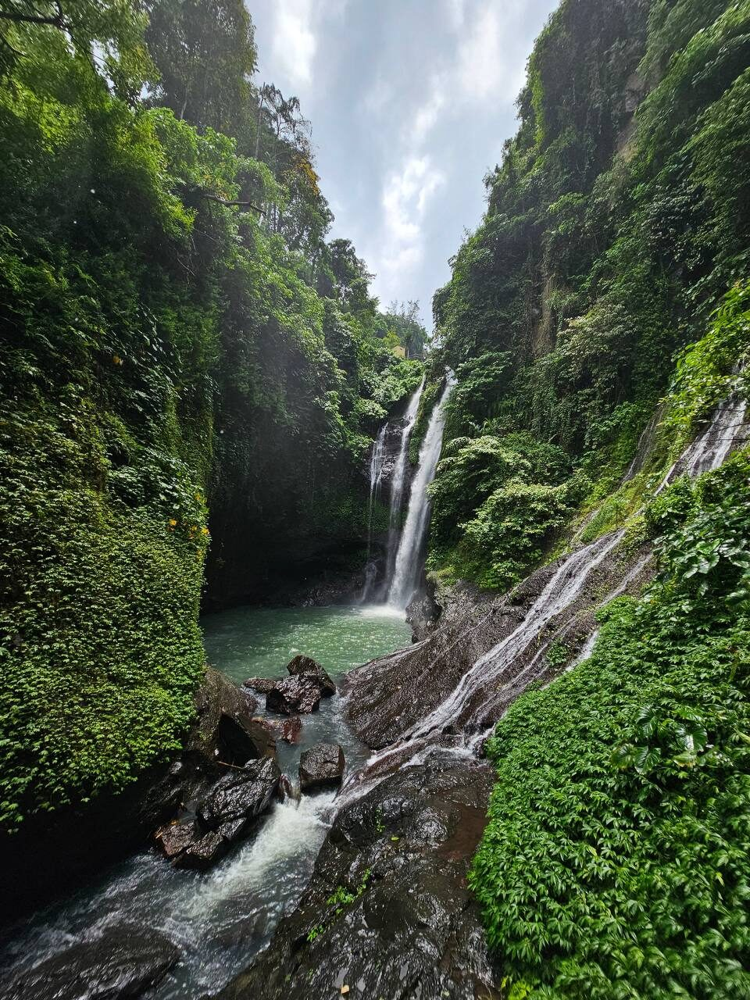
02дикая природа
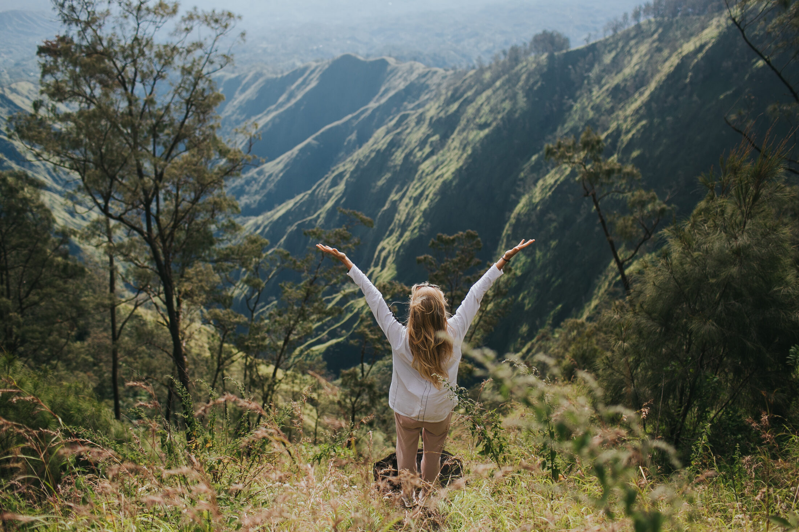
03полный круг вокруг острова
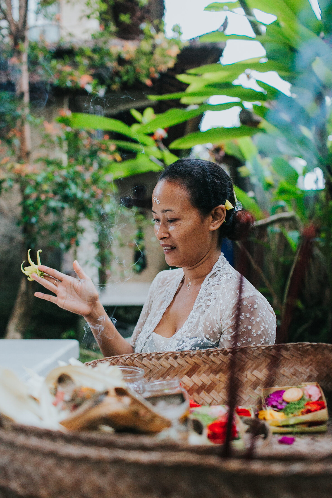
04живая, настоящая культура
03маршрут
Один маршрут — весь остров.
Не одна вилла.
Полный круг.
Мы не сидим на одной вилле: проходим Бали целиком, переправляемся на пароме на Яву к вулкану Иджен и замыкаем круг на Нуса-Пениде. Так почти никто не ездит — и именно поэтому вы увидите тот Бали, что остаётся за кадром обычных туров.
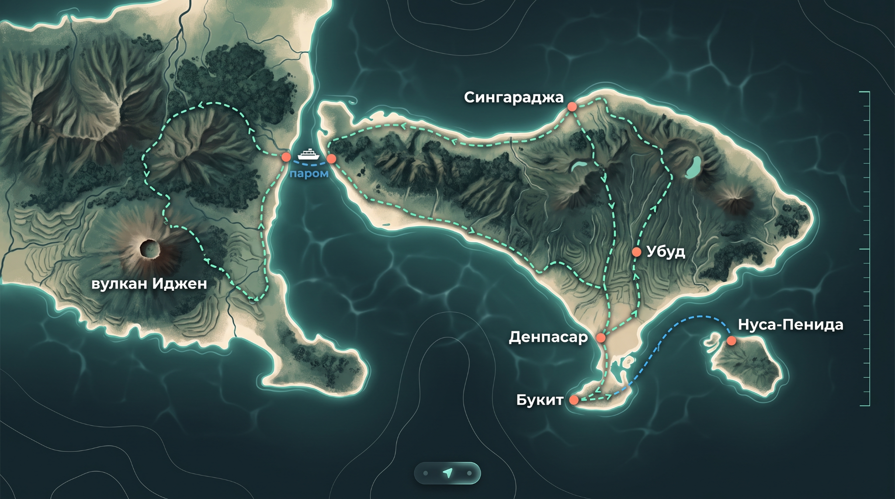
01Весь маршрут
Букит→Денпасар→о. Ява (вулкан Иджен)→Сингараджа→Убуд→Нуса-Пенида
04фотограф
человек, который пройдёт весь путь
«Я и не знала,
что я такая».
Все две недели рядом будет фотограф — не приглашённый на пару часов, а человек, который проходит весь маршрут вместе с вами. За её плечами огромный опыт и особая любовь к женщине в кадре: чаще всего после съёмки звучит одно и то же — «я и не знала, что я такая». Она знает Бали как никто: она здесь жила и знает каждый луч балийского солнца и то время, когда он ложится правильно. Поэтому домой вы увезёте не только ощущение острова внутри, но и кадры, в которых он остался.
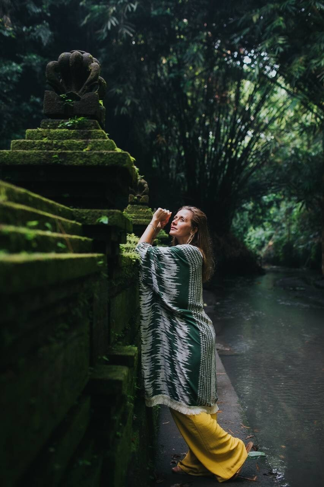
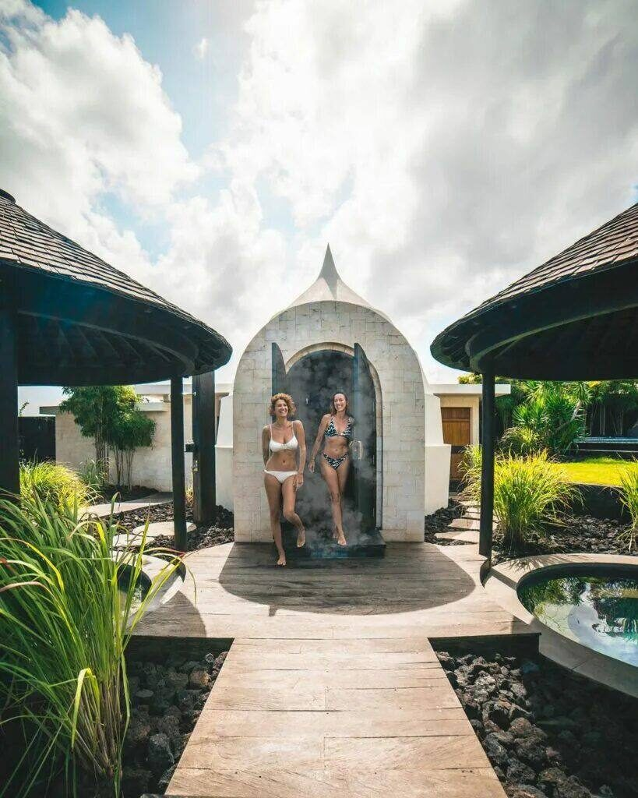
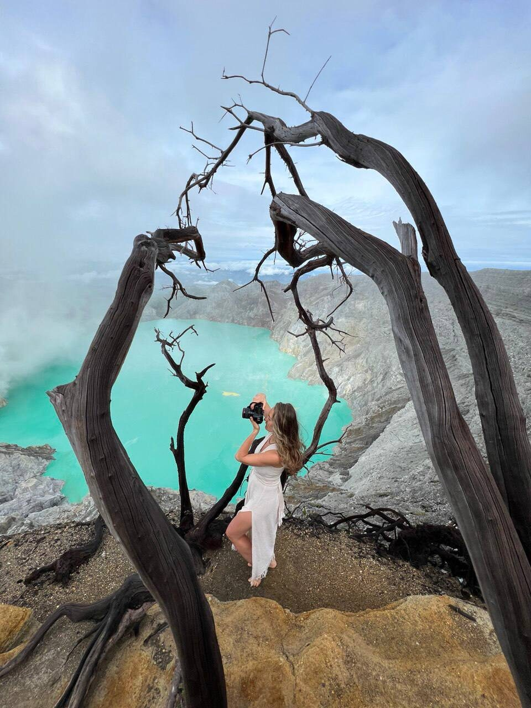
01прилёт · Букит
29 октября · день 1
Первый день — про то, чтобы выдохнуть.
Вас встречают в аэропорту, и дальше уже ни о чём не нужно думать: комфортный автобус, дорога на юг полуострова Букит, заселение. Вечером — первый совместный ужин: знакомимся, проговариваем программу, привыкаем к тому, что ближайшие две недели о вас позаботятся.
- 01встреча в Денпасаре, трансфер на Букит
- 02заселение в отель
- 03ужин, знакомство группы, разбор программы
02Меласти · Улувату
30 октября · день 2
Известное место, которое стоит увидеть вживую.
Утро на Меласти — одном из самых красивых пляжей юга: белые скалы, открытый океан, простор для съёмки. Загораем, купаемся, работает фотограф. На закате поднимаемся в Улувату — храм на краю обрыва — на танец кечак с видом на океан. Да, это место известное; но есть вещи, которые стоят того, чтобы увидеть их вживую хотя бы раз.
- 01поездка на Меласти, фотосессия
- 02храм и театр Улувату на закате
- 03ужин в ресторане
03Нуса-Дуа · Istana
31 октября · день 3
День без спешки.
Второй пляж — Нуса-Дуа: спокойная вода, время просто лежать. Кто хочет — пробует серфинг. А вечером поднимаемся в панорамную сауну Istana: хаммам, парная, костёр, звёздное небо над океаном. Тело отдаёт напряжение, которое копилось месяцами.
- 01пляж Нуса-Дуа, серфинг по желанию
- 02панорамная сауна Istana на закате
- 03ужин в ресторане
04Бали · паром · Ява
1 ноября · день 4
Сегодня начинается настоящая экспедиция.
Ранний выезд — и почти весь день дорога, но такая, ради которой едут: районы Бали, которые не попадают в открытки, дикие пляжи, джунгли, меняющиеся ландшафты за окном. Паром переправляет нас на Яву — самый густонаселённый остров планеты. Ночуем уже там, у подножия завтрашнего маршрута.
- 01ранний выезд
- 02дорога через весь остров
- 03паром на Яву
- 04заселение, ужин
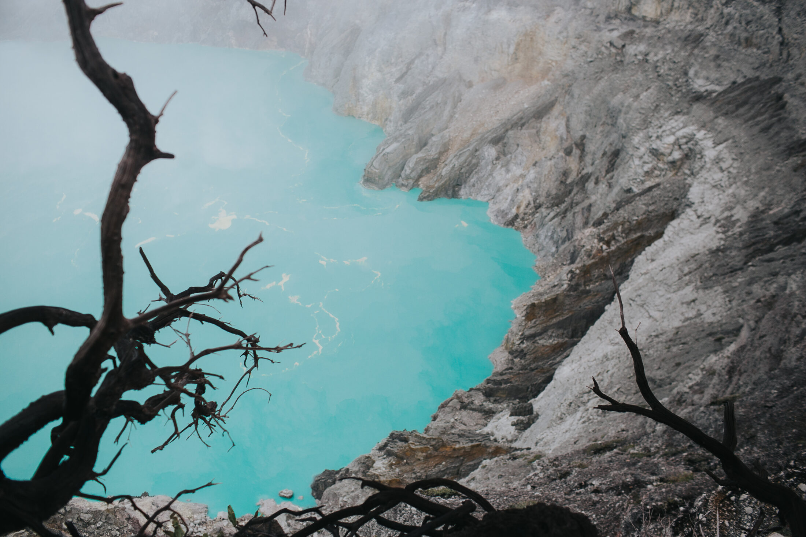
05главный день
2 ноября · вулкан Иджен
То, ради чего
стоит проснуться
среди ночи.
Ещё в темноте начинаем восхождение на Иджен — и встречаем рассвет на кромке кратера, у бирюзового вулканического озера, каких нет больше нигде. Прогулка по хребту, съёмка на фоне, от которого перехватывает дыхание, завтрак прямо на вулкане. Вид, который останется с вами навсегда. К вечеру возвращаемся на Бали.
- 01ночной подъём, трекинг к кратеру Иджен
- 02рассвет у бирюзового озера, прогулка по хребту, фотосессия
- 03завтрак на вулкане, спуск
- 04возвращение на Бали, ужин
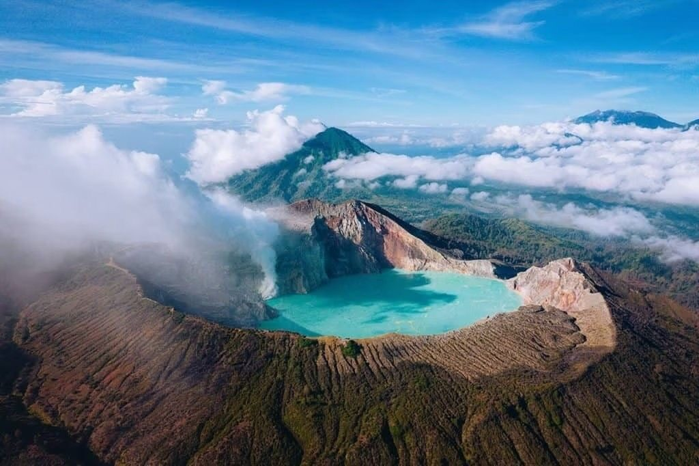
06север Бали · Алинг-Алинг
3 ноября · день 6
После вулкана — право выспаться.
Первую половину дня можно провести у бассейна или на пляже, ничего не планируя. Во второй половине едем к Алинг-Алинг — одному из священных водопадов севера, куда обычные маршруты не заворачивают. Ужин на северном побережье.
- 01завтрак, свободное время
- 02водопад Алинг-Алинг
- 03ужин на северном побережье
07дельфины · Убуд
4 ноября · день 7
С побережья — в тишину Убуда.
Раннее утро на воде: выходим в море на лодке встречать дельфинов — их здесь встречают на рассвете, пока океан ещё гладкий. Дальше переезжаем вглубь острова, в Убуд — в зелёные джунгли и тишину рисовых террас. Вечером — балийский театр Bali Dance.
- 01рассветная лодка к дельфинам
- 02переезд в Убуд, заселение
- 03балийский театр Bali Dance, ужин
08Убуд · живая традиция
5 ноября · день 8
Без эзотерики. Только то, что настоящее.
День внутри балийской традиции. Спокойное утро, лёгкая практика на тело, завтрак. Днём — выезд на мелукат: балийский ритуал очищения водой, который проводит Ида Ресси — единственная и самая молодая женщина-верховная жрица Бали. К ней съезжаются со всего мира, и это редкая возможность оказаться внутри живой традиции, а не туристической её версии. Вечер — спокойный ужин.
- 01утренняя практика, завтрак
- 02выезд на мелукат
- 03церемония очищения у Иды Ресси
- 04ужин в ресторане
09Убуд · Нунг-Нунг
6 ноября · день 9
Полный день Убуда.
Утром — фотосессия в отеле или на его тихих улочках. Затем едем к святым источникам, где можно войти в воду самим. Днём — Нунг-Нунг, один из самых мощных и высоких водопадов острова, съёмка рядом с этой силой. Завершаем день в сауне посреди джунглей и ужином.
- 01фотосессия в Убуде
- 02святые источники
- 03водопад Нунг-Нунг, фотосессия
- 04сауна в джунглях, ужин

10Убуд · Нуса-Пенида
7 ноября · день 10
Неспешное начало. Затем — снова в путь.
Время попрощаться с Убудом, докупить то, что хочется забрать с собой, просто пройтись. Днём — трансфер к причалу и быстрый катер на Нуса-Пениду, соседний остров с самой драматичной береговой линией Индонезии. Ужин — уже на берегу океана.
- 01свободное утро в Убуде
- 02катер на Нуса-Пениду, заселение
- 03ужин на берегу
11Diamond · Kelingking
8 ноября · день 11
Красивые ровно настолько, насколько обещают.
Главный день на Нуса-Пениде. Спускаемся к Diamond Beach — белый песок под отвесными скалами — снимаем, купаемся. Затем Kelingking: та самая бухта в форме дракона, ради которой на остров и едут. Места известные — и красивые ровно настолько, насколько обещают. Закат встречаем у океана.
- 01пляж Diamond Beach, фотосессия
- 02пляж Kelingking
- 03ужин на берегу океана
12манта-поинт · океан
9 ноября · день 12
Это не аквариум и не шоу.
Утром выходим на катере к дикой точке острова — плавать с мантами. Настоящая встреча с огромными океанскими скатами в их среде. Потом — сноркелинг в местах, где подводный мир Нуса-Пениды раскрывается по-настоящему. Остаток дня — пляж и ужин.
- 01катер к манта-поинт
- 02сноркелинг с мантами
- 03время на пляже
- 04ужин
13возвращение · Бали
10 ноября · день 13
Две недели, которые изменили ритм.
Последнее утро у океана — без будильника. Время на пляже, потом катер обратно на Бали. Вечером — прощальный ужин: подводим итоги двух недель, которые изменили ритм.
- 01утро на пляже
- 02катер на Бали
- 03прощальный ужин
14вылет
11 ноября · день 14
Последнее утро
Завтрак, неспешные сборы, трансфер в аэропорт. За спиной — весь остров: от кратера Иджена до закатов на пляжах Нуса-Пениды. Такой Бали не помещается в неделю. Он и не должен. Теперь это уникальная история, запечатлённая на сотнях фото.
- 01завтрак
- 02трансфер в аэропорт
- 03фотографии всего маршрута остаются с вами
18всё продумано
что входит в тур
Вам не нужно ничего
организовывать на месте.
Всё уже собрано и оплачено заранее. В стоимость входит:
- 01фотограф на всём маршруте — не в двух точках, а рядом весь путь
- 02трансфер на комфортабельном мини-автобусе до 12 человек на всём маршруте, включая встречу и проводы в аэропорту
- 03проживание в отелях 3–4* во всех локациях
- 04завтраки и ужины на протяжении всего тура
- 05билеты на этнический спектакль в храме Улувату
- 06панорамная сауна Istana
- 07паром на Яву и обратно
- 08сбор на восхождение на вулкан Иджен
- 09лодка для встречи с дельфинами
- 10сбор на водопад Алинг-Алинг
- 11день культуры в Убуде: мелукат, церемония очищения
- 12балийский театр в Убуде
- 13сауна в джунглях Убуда
- 14сбор на водопад Нунг-Нунг
- 15скоростной катер на Нуса-Пениду и обратно
- 16лодка для плавания с мантами
19честно о расходах
что не входит
Четыре пункта,
которые остаются за вами.
- 01
авиабилеты до Денпасара и обратно
- 02
обеды — днём мы, как правило, в дороге или на локациях; достаточно фруктов
- 03
виза Индонезии — оформляется в аэропорту, около 2 500–2 600 ₽
- 04
личные расходы
20что останется
после двух недель
За этим
сюда и едут.
Две недели, где ничего не нужно решать и организовывать, где о вас позаботились, где было красиво каждый день. Где вы снова почувствовали, какая вы, — и внутри, и на фото. Это и есть то, за чем сюда едут.
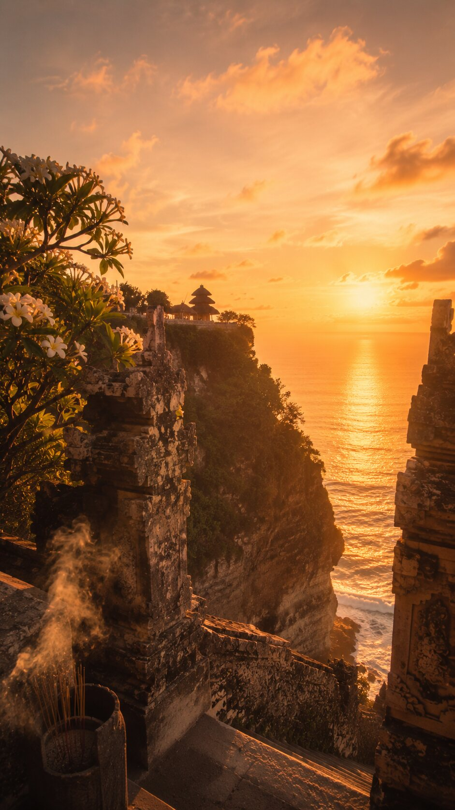
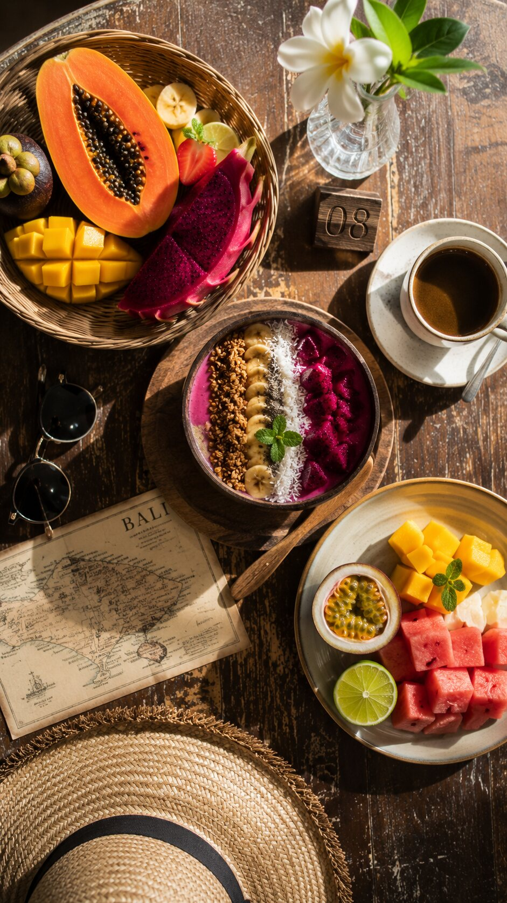
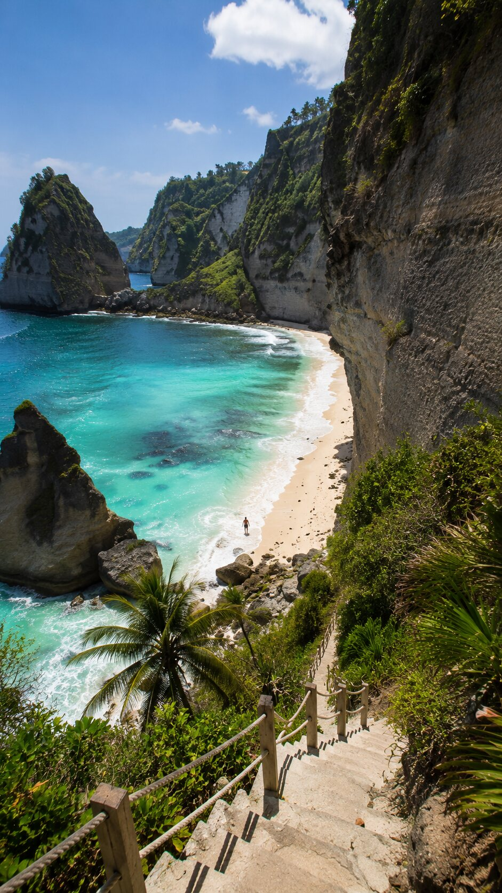
21стоимость
29 октября — 11 ноября · 2026до 12 девушек
Группа камерная — до 12 девушек.
235 000₽
Бали→Ява→Нуса-Пенида
интерактивная история · без звука